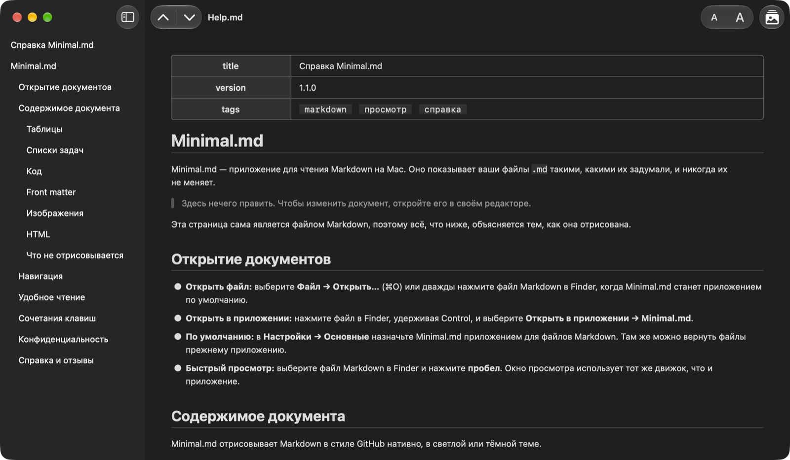

Чтение Markdown & быстрый просмотр
Откройте файл Markdown и просто читайте.
MinimalMD (ранее Minimal.md) открывает файлы .md, которые пишете вы и ваши ИИ-агенты, и показывает их такими, какими их задумали, — и никогда их не меняет.

Возможности
Без редактора, синхронизации и учётной записи.
Документ, отрисованный нативно системными шрифтами, в светлой или тёмной теме.
Читать, а не править
MinimalMD никогда не записывает в ваши файлы. Открывайте Markdown из Finder или через «Открыть в приложении» либо назначьте MinimalMD программой по умолчанию для Markdown в Настройках → Основные.
Работайте вместе с ИИ-агентами
Следит за файлом на лету, пока агент его пишет.
Никогда не конфликтует с агентом, который правит тот же файл.
Быстрый просмотр
Выберите файл Markdown в Finder и нажмите пробел, чтобы прочитать его отрисованным, не открывая приложение.
Приватность по умолчанию
Никаких сетевых подключений и сбора данных, удалённые изображения никогда не загружаются. Приложение читает только открытые вами файлы и папки, к которым вы дали доступ.
Снимки экрана
Рассмотрим подробнее.
Чтение
Создано для чтения.
Нативное приложение macOS и привычные сочетания клавиш.
Оглавление
В боковой панели перечислены заголовки документа.
Нажмите на заголовок, чтобы перейти к нему.
⌃⌘S
От заголовка к заголовку
Переходите к предыдущему или следующему заголовку стрелками на панели инструментов.
Переход к началу или концу документа.
⌘↑ ⌘↓ ⌥⌘↑ ⌥⌘↓
Ссылки, которые работают
Ссылка на заголовок ведёт к нему.
Ссылка на другой файл Markdown открывает его.
Веб-ссылки открываются в вашем браузере.
Удобство
Увеличивайте или уменьшайте текст на панели инструментов — все окна и Быстрый просмотр подстроятся.
Светлая или тёмная тема: MinimalMD следует оформлению вашего Mac.
⌘+ ⌘− ⌘0
Изображения
Изображения, лежащие рядом с документом, показываются на своих местах.
Изображения из интернета никогда не загружаются: вместо пустого места вы видите заглушку с описанием изображения.
⌥⌘L
Контекст
Выделите текст, чтобы использовать всё, что предлагает macOS: «Найти», «Перевести», «Инструменты для письма» и «Службы».
Нужен весь текст? Правка → Скопировать документ как Markdown копирует весь исходный текст.
⇧⌘C
Метки App Store
Конфиденциальность и универсальный доступ.
Сбор данных не ведется
Разработчик не ведет сбор данных в этом приложении.
Поддерживаемые функции на Mac
- VoiceOver
- Управление голосом
- Темный интерфейс
- Дифференциация не только с помощью цвета
- Достаточная контрастность
- Уменьшение движения
Языки
- Английский
- Французский
- Немецкий
- Итальянский
- Русский
- Испанский
Хотите MinimalMD на своём языке? Напишите нам.
Что нового
Что изменилось в каждой версии — в списке изменений (на английском).
Публичная бета
Хотите получать новые сборки раньше? Присоединяйтесь к тестированию (на английском).